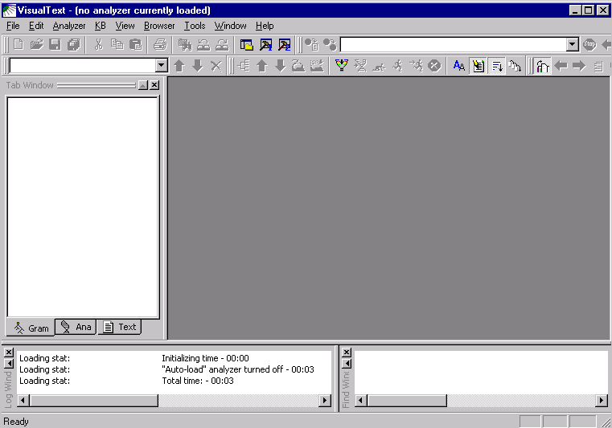
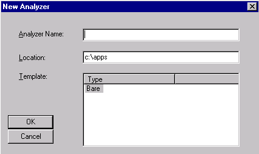
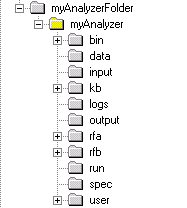
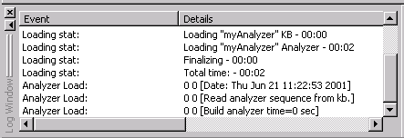
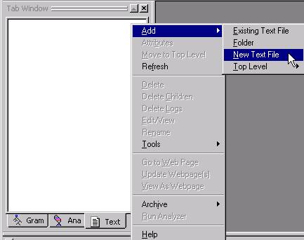
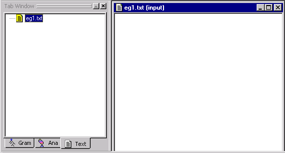
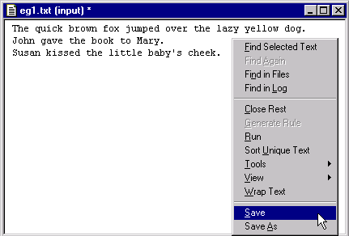
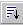
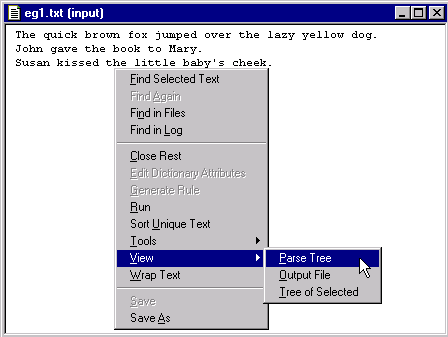

In Tutorial 1, you create and run a simple text analyzer. You give the analyzer a name and a location, select an initial template, and save the analyzer. Then you exit VisualText™ and reload the analyzer you created. We also introduce the Tab Window and the Log Window portions of the interface and explain how to create an input file. Finally, you run the analyzer and view the parse tree, which holds the patterns matched in a text.
 Launch VisualText by double clicking on the VisualText
icon on your desktop (or from Start button > TextAI > VisualText).
You should see the following screen:
Launch VisualText by double clicking on the VisualText
icon on your desktop (or from Start button > TextAI > VisualText).
You should see the following screen:

 If your toolbar area does not look like the above, right-click
the mouse in the toolbar area, then enable all the toolbars. We
recommend rearranging them as shown.
If your toolbar area does not look like the above, right-click
the mouse in the toolbar area, then enable all the toolbars. We
recommend rearranging them as shown.
Take a moment to familiarize yourself with the interface, which divides into three general areas: toolbars, windows, and a workspace.
The various toolbars give you access to commonly used functions. In Tutorial 1 you will mostly be working with the Main Toolbar. (See the Interface Overview section for the naming of the VisualText components).
At the bottom of the Main Window, you'll see the Log Window and the Find Window (VisualText 2 separates these into tabs). This is where you will be creating and monitoring your analyzer. You will learn more about the Main Window later in this tutorial. The Workspace is where you can view and manipulate files and tools for building and running text analyzers. For more details on the function of all of the windows, toolbars and menus, see the Interface section of this manual.
Now, let's create a new analyzer.
 Select File > New
Analyzer from the Main Menu. Note the title bar "VisualText
- (no analyzer currently loaded)" below:
Select File > New
Analyzer from the Main Menu. Note the title bar "VisualText
- (no analyzer currently loaded)" below:

A New Analyzer dialog box appears.

 Give the analyzer the name myAnalyzer.
Give the analyzer the name myAnalyzer.
 For location, give the following path C:\apps\myAnalyzerFolder
For location, give the following path C:\apps\myAnalyzerFolder
 For template, choose
Bare.
For template, choose
Bare.
A template is a starter or skeletal analyzer that you can copy and modify. The Bare template analyzer is a minimal analyzer and with a single pass called tokenize. The tokenize pass is discussed later in this tutorial.
 Click OK. You now see a VisualText splash
screen appear on the screen.
Click OK. You now see a VisualText splash
screen appear on the screen.
After a few seconds, the VisualText title bar reads "VisualText - myAnalyzer."
When new analyzers are created, VisualText makes a directory structure in the working directory. For this analyzer, VisualText created the following directory structure in c:\apps:

This folder structure houses all the information needed to run the analyzer, including folders for input and output, a folder for the knowledge base, etc. The analyzer you just created, myAnalyzer, refers to this entire directory structure. The set of related files and directories under myAnalyzer is called a project in VisualText and other development environments. For a detailed description of an analyzer project, see Structure of Analyzer Projects.
One important file automatically generated in the myAnalyzer folder is myAnalyzer.ana, which organizes your project. When you load an analyzer, you do so by opening the myAnalyzer.ana file.
Now we exit the program. (Note that the Help should stay as-is, as a separate program.) Launch VisualText again to continue with Tutorial 1.
 Select File
> Exit from the Main Menu.
Select File
> Exit from the Main Menu.
 To load the analyzer you
just created, invoke VisualText and select File
> Open Analyzer.
To load the analyzer you
just created, invoke VisualText and select File
> Open Analyzer.

 Use the Open dialog to navigate
to C:\apps\myAnalyzerFolder\myAnalyzer:
Use the Open dialog to navigate
to C:\apps\myAnalyzerFolder\myAnalyzer:

 Select myAnalyzer.ana,
then select Open.
Select myAnalyzer.ana,
then select Open.
This step loads the analyzer.
Once an analyzer is open, be careful to distinguish between File > Open... which opens a file into the Workspace area, and File > Open Analyzer, which enables you to close the current analyzer project and browse to an .ana file of another project.
Three large windows comprise the analyzer work area: the Log Window, located in the lower left corner of the VisualText interface, the Tab Window located in the upper left portion of the interface and the Find Window located in the lower right corner. You can resize, dock and dismiss these windows as you choose. If you close a window and want to reopen it, use the toggle buttons on the main menu toolbar:

The leftmost button toggles the Tab Window.
The left hammer toggles the Log Window while the right hammer toggles the Find Window.
The Log Window gives you some basic information about an analyzer when you open it. It also displays information about rules as they are processed and applied to text you are analyzing.

Here it displays the time it took to load the minimal analyzer (myAnalyzer) and its associated knowledge base (KB).
When an error occurs or other information needs to be reported to the user, it is displayed in the Log Window. For typical messages displayed in the Log Window, refer to Log Window Messages.
There are three tabs in the Tab Window: Gram, Ana and Text.

Gram is where you manage samples taken from input texts.
Ana is where you control the text analyzer sequence, passes, and pass files.
Text is where you manage text input and output files.
VisualText is an integrated development environment (IDE) for creating text analyzers. It gives you access to all the machinery you need to create an analyzer in a single framework. The Gram, Text and Ana tabs are essential parts of the machinery. Generally speaking, you view and manage the input and output files through the Text Tab; the text analyzer sequence, passes, and manually-edited rules in the Ana Tab; and the automatically-generated rules in the Gram Tab.
The Tab Window can be resized by dragging the right edge of the window towards the left. When resizing the window hides one of the tabs, you can use the toggle arrows to find it.
 Familiarize yourself with
each of the tabs in the Tab Window, by selecting the tab (Ana, Gram or
Text) and with the cursor in the window (not directly on the tab), right
clicking to bring up the popup menu.
Familiarize yourself with
each of the tabs in the Tab Window, by selecting the tab (Ana, Gram or
Text) and with the cursor in the window (not directly on the tab), right
clicking to bring up the popup menu.
You'll be working with a few of these popup menu items in this tutorial. But for a detailed list of the various functions available in the Tab Window, see Popup Menus in the Interface section of this guide.
 Click on the Gram
Tab and then on the Text Tab.
Click on the Gram
Tab and then on the Text Tab.
Notice that nothing is contained in either of these tabs. By default, these two tabs are left empty. As you add input texts, analyze them, and sample information from the texts, you will create data in these two areas.
 Now click on the Ana
Tab.
Now click on the Ana
Tab.
Notice that it is not empty. The Ana Tab comes with a built-in default pass, the tokenize pass. A pass is a discrete step in the text analyzer, with its own pass algorithm. The main pattern-matching pass type in VisualText (called pat) uses a pass file, which consists of NLP++™ code and rules. NLP++ is a general purpose programming language that is integrated with both a grammar and a hierarchical knowledge base management system (KBMS). This tight, three-way coupling is ideal for developing text analysis applications. NLP++ code can manipulate the parse tree and attach information to it, as well as access and modify knowledge used during text analysis.
The tokenize pass algorithm is a system pass and does not have an associated pass file. Tokenize executes first, traversing the input text to convert it to a structure called a parse tree. As you add new passes to the Ana Tab, they become part of the stepwise sequence executed when the text analyzer runs on an input text. Each pass typically updates the parse tree with patterns that it identifies. As we'll see, NLP++ enables a pass to also manipulate the information in the parse tree and the KB.
The last of the Main Windows is the Find Window. It is used to display search results when running a search on texts. Since we don't have any text to search yet, we won't be able to use this window now.
Now we need some text to analyze. In VisualText you have the option to use existing text files or to create new text files. For this tutorial, we'll create a text file from scratch.
 Click the Text
Tab.
Click the Text
Tab.
Then, with the cursor in the white area of the Text Tab, right click in the window to bring up the Text Tab Popup Menu.
 Select Add
> New Text File:
Select Add
> New Text File:

 Name the file eg1
(and don't include an ending such as .txt).
Name the file eg1
(and don't include an ending such as .txt).
 Click OK.
Click OK.
Notice that a file called eg1.txt has been added to the Workspace and that the file has also been added in the Text Tab. The default extension .txt is automatically added to the file name. "input" after the file name indicates the file is located in the input folder.
In addition to text files, you can use binary or formatted text files such as html as input.
Your Tab Window and Workspace should look like this:

 Now, type the following text
in the eg1.txt file:
Now, type the following text
in the eg1.txt file:
The quick brown fox jumped over the lazy yellow dog.
John gave the book to Mary.
Susan kissed the little baby's cheek.
An asterisk * is added to the top of the file indicating the file has changes which have not been saved.
 To save the file, put the
cursor in the body of the text file and right click to launch the Text
File Popup Menu:
To save the file, put the
cursor in the body of the text file and right click to launch the Text
File Popup Menu:

 Select Save.
Select Save.
You can also save files in the Workspace with the Save button located on the Main Toolbar.
The file is written to the following directory:
C:\apps\myAnalyzerFolder\myAnalyzer\input
When you are supplying your own files, you would copy them into this same directory.
If you do add existing text files to the directory, it will be necessary to refresh the Text Tab. You can refresh by putting your cursor inside the Text Tab Window, right clicking and selecting Refresh from the Text Tab Popup Menu. Note that in this case you will get a dire-looking message saying that "all knowledge associated with text files" will be lost if you refresh. You can safely ignore that message and continue to refresh. (It refers to attribute knowledge that one could add to text-file concepts in the knowledge base.)
Now that we have some text, we are ready to run the analyzer. Recall that the analyzer at this point is made up of one default rule pass: tokenize.
So that you can see each step in the analyzer
sequence, select Generate Logs
button  on the Workspace Toolbar.
(When the button is depressed, it appears indented.) When you run an analyzer
with Generate Logs on, log files will be created so that you can get detailed
information about each step of the analyzer sequence, which can help you
debug your analyzer. You'll learn more about generating logs in later
tutorials.
on the Workspace Toolbar.
(When the button is depressed, it appears indented.) When you run an analyzer
with Generate Logs on, log files will be created so that you can get detailed
information about each step of the analyzer sequence, which can help you
debug your analyzer. You'll learn more about generating logs in later
tutorials.
 Select eg1.txt
in the Text Tab.
Select eg1.txt
in the Text Tab.
 Click the Run
button
Click the Run
button  on the Workspace Toolbar to "run" the analyzer.
on the Workspace Toolbar to "run" the analyzer.
Notice that information about the application of rule passes is displayed in the Log Window. Here it lets you know the name of the text being analyzed and the date the file is processed.
We recommend keeping the Verbose Mode  button TURNED OFF, as it has no useful function at present. It is always a good idea to check the Log Window when creating your analyzer since this is where error messages will show up.
Now that we applied the tokenize pass to the input file, we can look at one output of the analysis, called the parse tree.
When the analyzer is run on a text, it first converts the sequence of characters to "tokens" or "lexemes" and places them under a root. This constitutes the initial parse tree. Subsequent passes modify the parse tree as they match new patterns within it. A parse tree is similar to the sentence diagramming taught in elementary school where you break a sentence down into parts such as nouns, verbs, noun phrases, verb phrases, subjects, objects, etc. Each pass in a VisualText analyzer takes as input the accumulated parse tree built by all the prior passes.
There'll be a lot more information about passes and trees later on in these tutorials, but for now, let's take a look at the parse tree you just built for the eg1.txt file.
 Select eg1.txt
in the Workspace.
Select eg1.txt
in the Workspace.
 Right click to bring up the
Text File
Popup Menu.
Right click to bring up the
Text File
Popup Menu.
 Select View
> Parse Tree:
Select View
> Parse Tree:

VisualText displays a parse tree for the text file in a new window.

Notice the title of the window, 'eg1.txt: _ROOT [1 tokenize 0-119]' and the graphic that precedes the title, the parse tree graphic. The title lets you know that this is the parse tree for the file eg1.txt and it corresponds to the first pass in our analyzer sequence (1 tokenize) and also that 119 characters were tokenized. If you don't have 119 this just means that there may have been some extra spaces or carriage returns in your file.
The parse tree consists of nodes. Each line in the parse tree represents a single node. Our parse tree starts with the node _ROOT. The root of the parse tree covers the entire input text.
Nodes 'contain' text and other nodes and are said to be either terminal or non-terminal. A node is non-terminal if it dominates other nodes and terminal if it does not. As you can see, there is only one non-terminal node in our parse tree, _ROOT. All of the elements in our sentences, right down to the punctuation are dominated by _ROOT. The other nodes in our parse tree are terminal nodes. The terminal nodes are like the 'leaves' or end point of the tree and do not dominate anything else.
Each terminal node contains the following: the node name, the token type and the text from the file. The first terminal node under ROOT is 'The::[alpha] The'. This means that the input text has as its first terminal node 'The' and that the text 'The' is a sequence of alpha characters. The next terminal node in the file is \_ which means a white space, ie the white space after the word 'The'. (More on the literal use of \ will be discussed in later tutorials.)
As you may have found, you can distinguish between terminal and non-terminal nodes by the symbols used in the parse tree. The non-terminal nodes are indicated by an arrow and the terminal nodes are indicated by a thin, rectangular bar. A non-terminal node will be blue when selected and grey otherwise. A terminal node is red unless it is selected at which time it will turn blue. You can collapse and expand nodes by clicking on the + and - symbols.
If you want to see the details of the analyzer run, you can look at the log files located under the eg1.txt file in the Text Tab Window.
 Click the "X"
in the upper right-hand corner of the eg1.txt and parse tree files to
close them.
Click the "X"
in the upper right-hand corner of the eg1.txt and parse tree files to
close them.
 Exit the analyzer by selecting
File > Exit.
Exit the analyzer by selecting
File > Exit.
 (In some versions) answer
No at the confirmation prompt
for saving the knowledge base.
(In some versions) answer
No at the confirmation prompt
for saving the knowledge base.
In this tutorial, we created an analyzer, gave it a name and a location, selected a template, saved it, exited and reloaded it. We introduced the Tab Window with the Text Tab, Ana Tab and Gram Tab. We looked at the Log Window, then gave our analyzer some text to analyze. Finally, we analyzed the text using the default system pass tokenize and viewed the resultant parse tree.